OPEN MICROLED DRIVER ASIC / 2026-10-23 / 实验性研发方法验证与教学
高速 NRZ 驱动器：慢热接收与快冷端电压的修正
本轮比较 A「受限输出摆幅电压驱动」与 B「基线偏置＋电流转向」。把电路修改放回真实版图后，需要同时处理信号边沿和衬底电流的返回路径。两条路线已完成实际版图修改、寄生参数提取和同条件回归，速率与能耗的代价分别列出。
现阶段可以怎样使用这些结果：在本轮三组联合条件、同一 MicroLED 负载和接收代理下，修改后的 A 以 1 Gb/s、B 以 0.5 Gb/s 同时通过接收和 3.63 V 项目电压筛查。慢热最小垂直余量分别为 0.122 / 0.196，要求为 0.1；快冷最大局部 MOS 端差为 3.6206 / 3.6189 V。
A 的原典型 2 Gb/s 结论不能延伸为当前全条件工作速率。本轮没有改变 LED、判决阈值或采样算法来获得通过，也没有完成硅片、光链路 BER 或生产可靠性签核。
1. 先分清“接收通过”和“器件电压通过”
本轮的“通过”是两个独立判据同时成立：接收代理在 511 比特验证段中零错误，垂直余量 ≥ 0.1、最小水平余量 ≥ 0.1 UI；所有被保存的 MOS 局部 D/G/S/B 端子组合电压差均不超过 3.63 V。该电压数值沿用项目筛查，不是晶圆厂对任意端子、脉冲宽度和寿命条件的可靠性许可。公开电气表里的 3.63 V 是特定关断电流测试条件，不能直接推导可靠性限值。GF180 电气规格。
下表只列七个实际测试速率中的离散通过点，不推断它们之间所有速率均通过。三组条件为 TT / 27°C / 3.3 V、SS / 125°C / 3.0 V、FF / −40°C / 3.6 V；电阻角与 MOS 角成对设置。温度改变 MOS 和新增电阻模型，LED 静态曲线没有温度模型。
旧版的典型接收最高离散通过点为 A 2 Gb/s、B 0.5 Gb/s，但快冷端电压超出项目筛查。因而不能把旧版典型速率称作跨条件可用速率。低速也不是自动通过：原采样训练算法的相位选择可能造成低速水平余量失败；这里保持该算法不变并保留失败点。
展开固定实验条件与余量定义
静态 LED 采用同一公开 20 µm 黄色 MicroLED I–V 拟合；动态 CLED = 200 fF，封装 R = 1 Ω / L = 0.5 nH，VLED = 5 V，外部 DATA 边沿 20 ps。光学代理时间常数 200 ps、接收一阶带宽 1 GHz，均为共同假设，尚非该 LED 的动态实测。电流目标 I₀ / I₁ = 25 / 100 µA。
32 位交替预热 + 254 位 PRBS7 训练 + 511 位 PRBS9 验证 + 32 位尾部。固定阈值 62.5 µA，归一化跨度 75 µA。垂直余量定义为 min(最小“1”−62.5 µA，62.5 µA−最大“0”)/75 µA；0.1 对应 7.5 µA 的判决距离。水平余量用 UI（一个比特周期）表示。训练只选择采样延迟（整 UI 加相位，搜索范围 0–4 UI），验证段不重新调参。
电压余量 = 3.63 V − max|MOS 端子电压差|。取能按同一 511 个输入 UI 窗口，逐电源及 DATA 积分正向功率，再除以 gross bit 数；另存回灌和净取能。功率与取能关系为 P = Ebit × bit rate。A 的 VH/VL 仍是可吸收电流的理想电源，正向取能不能自动等同于实际稳压器输入能耗。
2. 原版的两项失败发生在不同环节
慢热：孤立“1”的电流建立不足。A 在 2 Gb/s 有 64/511 个比特错误，B 在 0.5 Gb/s 有 2/511 个。同一个验证位（第 139 位）的接收代理峰值分别只有 46.282 / 62.268 µA，低于 62.5 µA 阈值，因此移动采样点也无法让这两个脉冲变成正确的“1”。A 的 CTRL 逻辑高电平宽度仍约 502 ps，不能把旧版问题简单解释为数字逻辑吞掉脉冲。
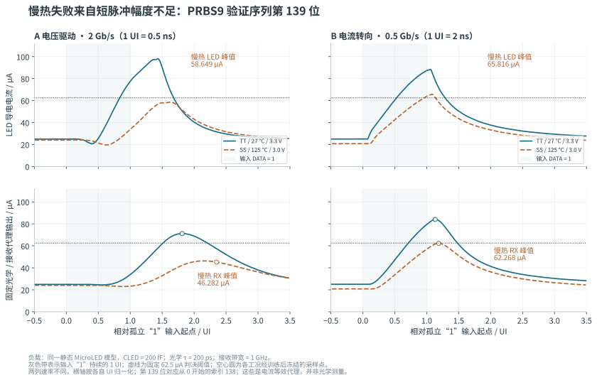
同一数据位在典型与慢热条件下的导电电流和接收代理。LED 导电电流与含电容的封装支路电流分别处理。 点击可打开完整 SVG。
快冷：前级内部节点短暂高于 VDD。A 的 N1、B 的 GB 将电压尖峰传给第二级 NMOS 栅端，最差栅体电压分别为 3.725269 / 3.763590 V。峰值时体端偏移不足 1 mV，所以旧版的主问题是信号节点抬高。波形与输入边沿的电容馈通一致；MOS Cgd 和布线耦合电容的独立贡献没有被逐一提取成确定比例。
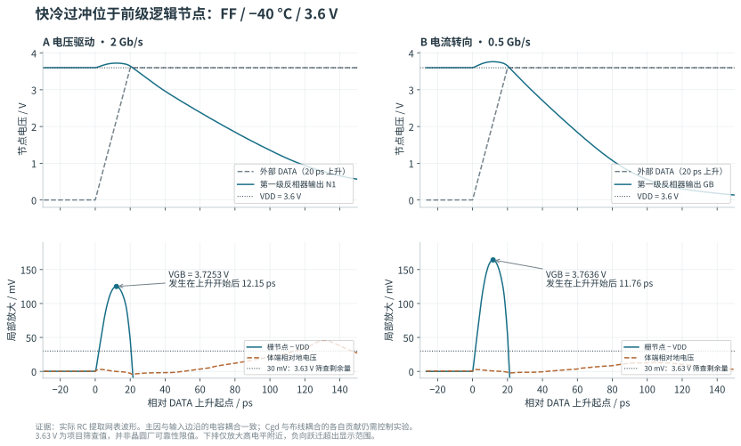
原版 RC 的快冷局部端子波形。比较的是同一器件的真实局部端子，未把所有 VSS 节点强行视作理想零电位。 点击可打开完整 SVG。
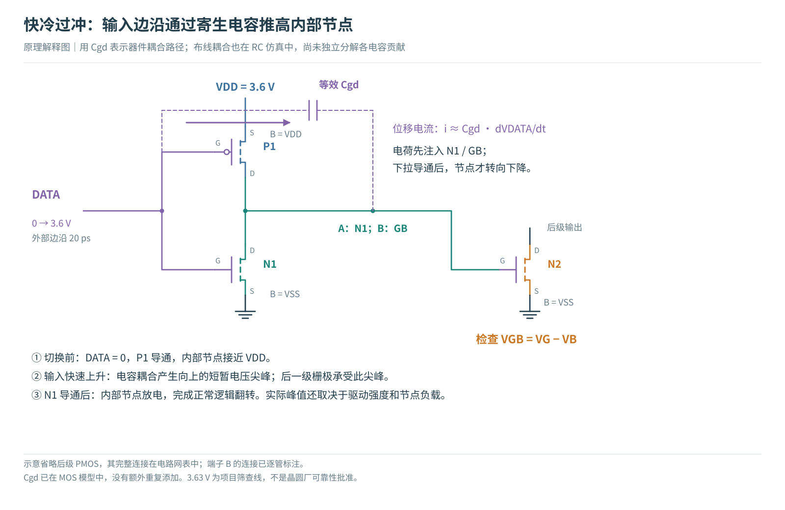
电容馈通的局部原理图。iC ≈ C · dV/dt；内部节点的短时电荷平衡与正常逻辑翻转是两件事。 点击可打开完整 SVG。
3. 最终电路保留 MOS，调整输入与偏置路径
两条路线的 MOS 型号、W/L 与基本拓扑保持不变。DATA 先经过高阻多晶硅电阻 RIN，再进入首级反相器 DI：A 采用 48 × 1 µm，B 采用 58 × 1 µm 的 ppolyf_u_1k_6p0。名称里的 6.0 V 是该电阻器件类型；驱动 MOS 仍是 nfet_03v3 / pfet_03v3，没有改成另一种半导体材料。
电阻与输入电容共同减慢内部 DI 边沿，降低输入耦合尖峰；代价是输入建立时间增加。该工艺模型含多个 RC 段、端部/主体不同温度系数和对衬底电容，不能用一个恒定理想电阻替代最终结果。模型定义见 GF180 Resistor Models；实际数值来自冻结的本地模型。
上表是冻结模型在 3.6 V 电阻端压下的独立 DC 测试。R ≈ R□ × L/W 适合初估，但最终还包括端部、温度与工艺角，不能把 48 / 58 µm 直接等同于精确 48 / 58 kΩ。
B 另将外部 RREF 从变化的逻辑 VDD 改接到已有固定 3.3 V 的 VDUMMY 电源。近似关系 IREF ≈ (VDUMMY − VGS,REF)/RREF，使逻辑供电降至 3.0 V 时不再直接减少参考电阻两端的电压。器件工艺/温度依赖仍在，这不是片内稳压器、带隙基准或温度补偿电路。VDUMMY 供给参考支路的电流已经计入能耗。
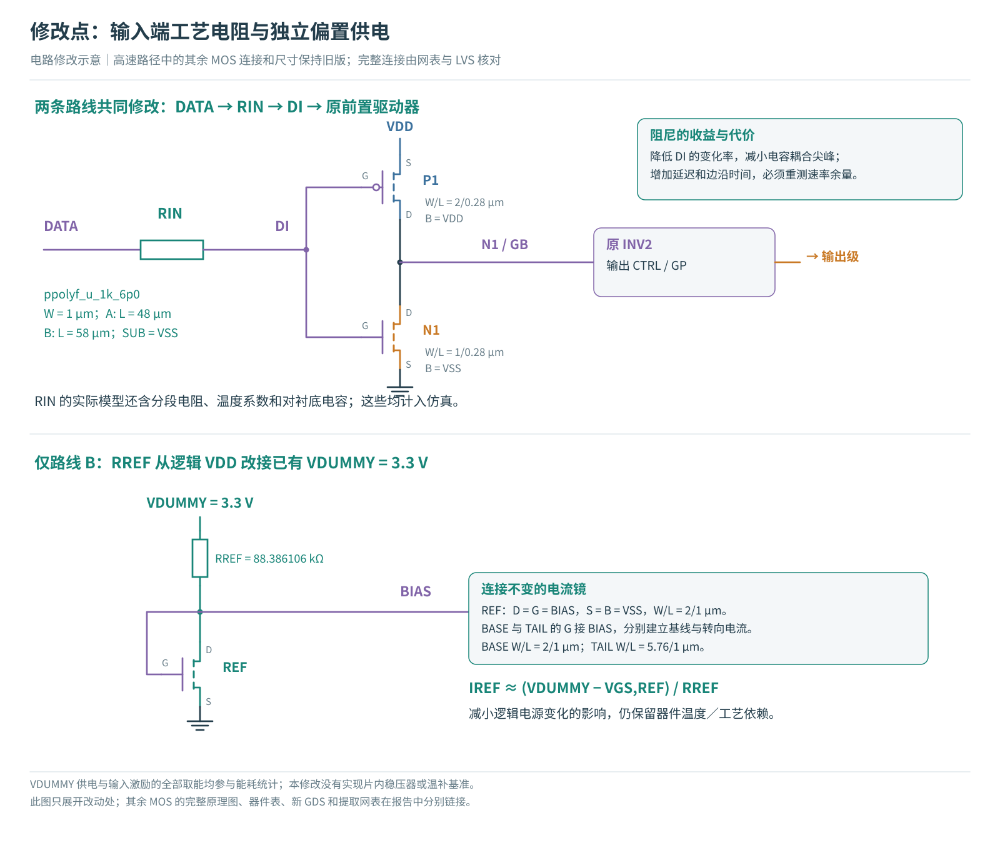
只展开修改处。RIN 的第 3 端为衬底 SUB，后续实际版图必须为它提供低阻返回路径。 点击可打开完整 SVG。
完整 A / B 电路图、所有 MOS 连接
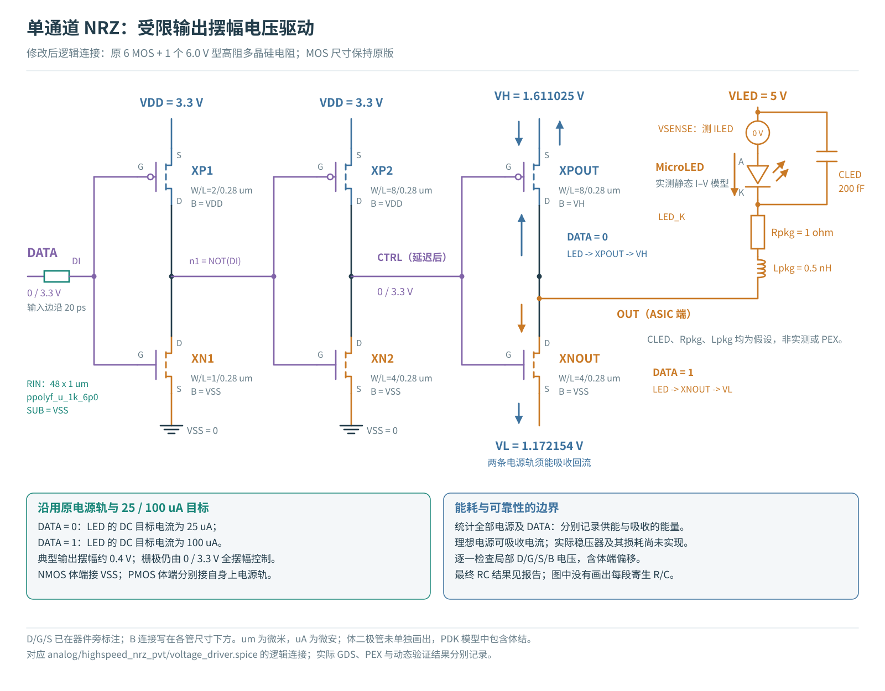
A：输入工艺电阻 + 两级 CMOS 前置驱动 + 受限输出摆幅级。VH/VL 保持原校准值；实际 DC 电流见后表。 点击可打开完整 SVG。
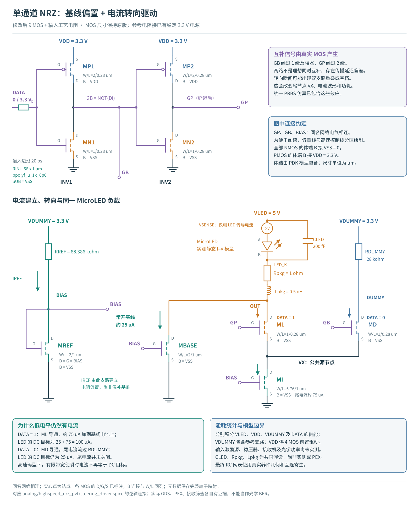
B：输入工艺电阻 + 互补逻辑 + 常开基线电流镜 + LED/虚设支路转向。RREF 与 RDUMMY 仍在本次核心版图之外。 点击可打开完整 SVG。
图中 3.3 V 为典型条件示值；慢热与快冷逻辑 VDD 分别为 3.0 / 3.6 V，其他声明固定的电源保持不变。表列原理图端序 D/G/S/B；提取网表可能对称交换 D/S，映射保存在物理证据。不能把提取记录的 VSB 直接误读成原理图中接地源极的电压。
4. 首次修改版图再次失败：这次是衬底返回路径
仅器件几何模型中，输入电阻候选表现较好；首次真实 RC 版图却使 A 的快冷最大端差升到 3.706667 V。逐端核对发现，峰值时 CTRL = 3.595125 V，局部 MOS 体端 B = −0.111542 V，故 3.595125 − (−0.111542) = 3.706667 V。这里不是 CTRL 大幅超过 VDD，而是体端下移扩大了电压差。
同一时刻，电阻局部衬底端约为 −0.753 V。20 ps DATA 下降沿经电阻模型的寄生电容抽取衬底电流，高阻返回网络形成局部电位扰动。作为因果控制，仅把电阻 SUB 改接理想 VSS，A 的最大端差便降至约 3.6180 V，接收结果基本不变。这个理想短接只用于诊断，没有代替最终版图。
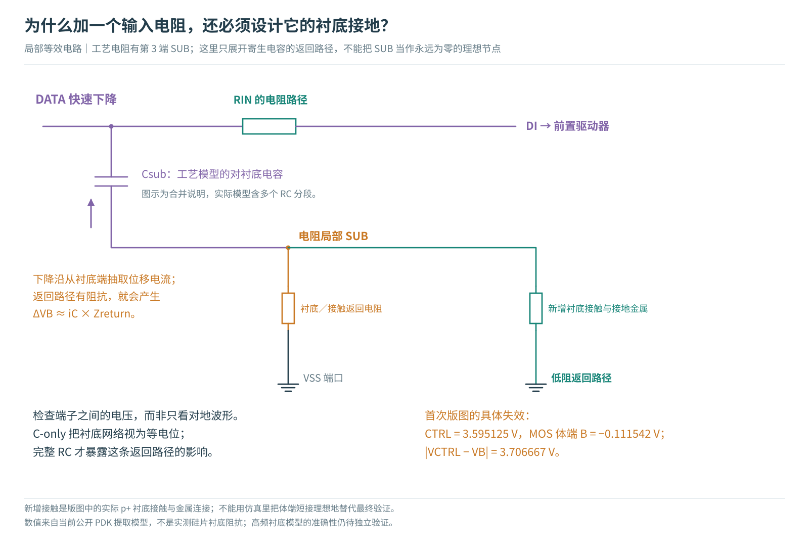
第三端寄生电容与衬底返回电阻组成实际电流回路。新增 p+ 接触、接触孔和地金属的作用，是降低这个回路的阻抗。 点击可打开完整 SVG。
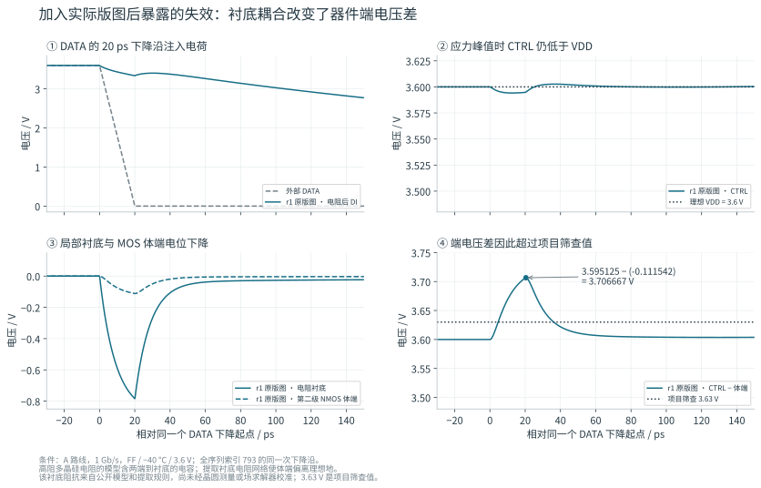
首次修改版图暴露的体端扰动，保留为失败证据。提取端序的 VSB 对应原理图输出节点到体端的电压差。 点击可打开完整 SVG。
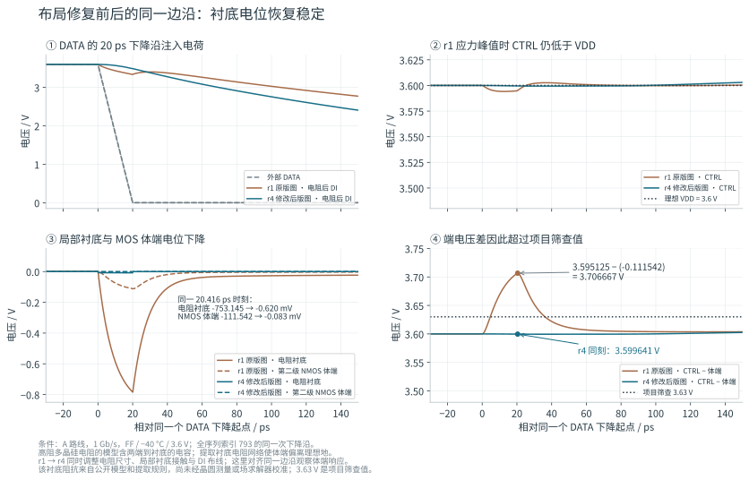
A 首次修改版与最终版：对齐同一个输入下降沿，在距边沿 20.4159 ps 的同一时刻比较。曲线展示整体修改效果，不把多个同步变化伪装成单因素实验。 点击可打开完整 SVG。
同刻电阻体端由 −753.145 mV 变为 −0.620 mV，第二级 NMOS 体端由 −111.542 mV 变为 −0.083 mV；CTRL 到体端的差由 3.706667 V 降至 3.599641 V。这是该时刻、该端对的对比；最终波形的全局最大端差仍是其他时刻的 3.620623 V，二者不能混用。
首次版图的慢热问题则来自 DI 连线电容：A 的 GEOM → C → RC 三组控制中，CTRL 高电平 50% 宽度由 992.5 → 741.7 → 734.5 ps，LED 峰值由 83.279 → 69.668 → 67.933 µA。损失主要在加入电容时出现。几 fF 与数十 kΩ 相乘已是数百 ps 量级，对 1 ns 的比特周期不可忽略；最终仍依赖非线性瞬态仿真，而非只用一个 RC 时间常数判断。
5. 在版图中落实修复，而非把寄生节点删掉
最终布局把电阻后的 DI 接线缩短并接近首级栅极，在电阻与 MOS 区之间增加连续 p+ 衬底接触带和 VSS 金属连接，同时保留电阻四边接触。A 将电阻长度由 58 µm 调至 48 µm，以补回慢热输入建立时间；B 保留 58 µm。
对实际提取线性 R 网络进行独立的单位电流求解：A 的电阻 SUB 到 VSS 自阻由 1900.27 Ω 降至 20.82 Ω，SUB 注入电流到第二级 NMOS 体端的转移电阻由 280.59 Ω 降至 0.0137 Ω；B 分别由 1617.84 Ω / 146.91 Ω 降至 21.75 Ω / 0.1670 Ω。这是当前提取模型中的结果，尚未由实测或三维场求解校准。它解释了为什么只看逻辑地符号不够。
“DI 入射 C”把接地电容及每条与 DI 相连的耦合电容各计一次，未包括 MOS 内禀电容或工艺电阻模型内部电容。邻接节点也会翻转，因此这不是一个在任意状态下都成立的等效输入电容。显式 C 总和也不是带宽公式中的单一负载值。见 几何、R/C 与计算数据。
面积为核心 GDS 包围盒，不是有源面积，也不是包含 pad、ESD、电源、封装的芯片面积。直条电阻与接触带优先便于验证，尚未做蛇形电阻或紧凑布局优化；不可把当前包围盒增量认定为该功能不可避免的面积成本。
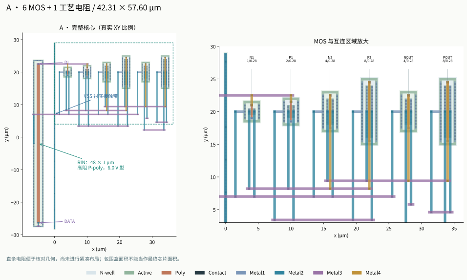
A 最终实际 GDS：全局视图与 MOS 区放大。XY 尺度来自 GDS；显示层只用于区分结构，不代表材料厚度或三维电磁结果。 点击可打开完整 SVG。
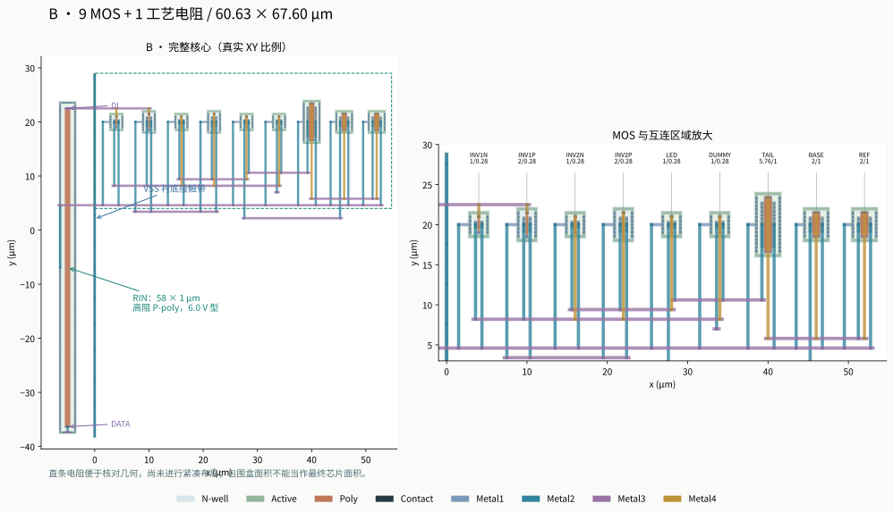
B 最终实际 GDS。电阻第三端、p+ 衬底接触和 VSS 金属共同构成返回路径；外部参考电阻与虚设负载不在这块核心中。 点击可打开完整 SVG。
打开可切换金属层、网络和 MOS 端子的真实 GDS 查看器。选择 DATA、DI、VSS 可对应输入、阻尼后的信号及衬底返回连接。
6. 相同速率比较取能，相同条件比较余量
下图统一在 0.5 Gb/s 比较两路线。电压余量为负时，即便接收零错误也不能称为联合通过。失败速率下统计的 fJ/bit 只是激励源取能，不是可交付数据的能效。
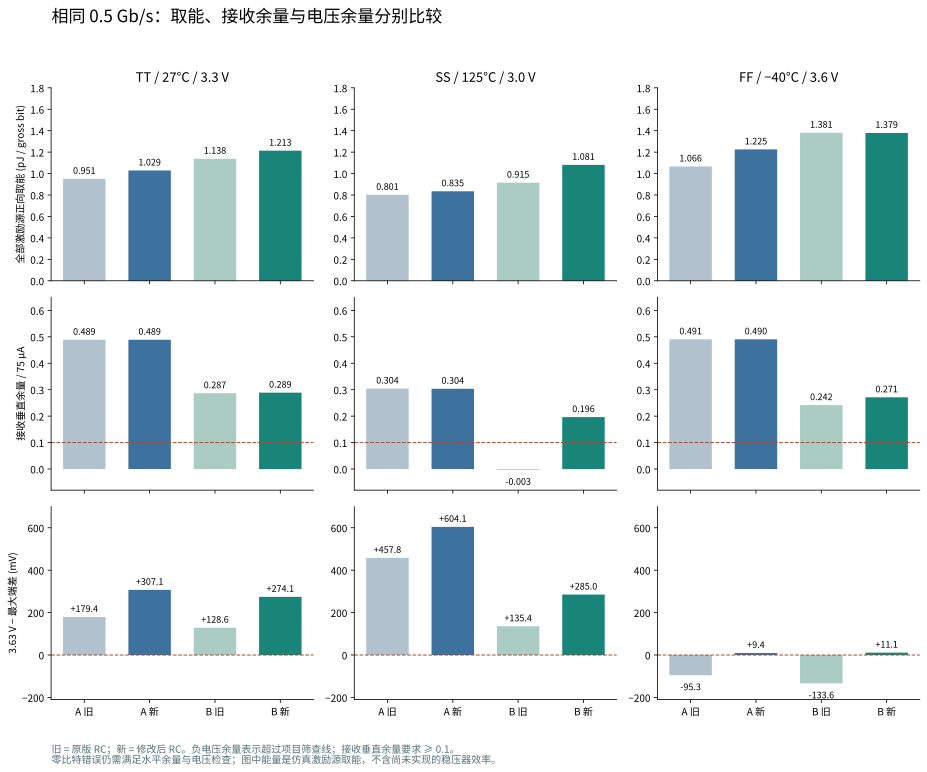
同一 0.5 Gb/s、同一负载与接收条件。正向取能、接收垂直余量、MOS 电压余量独立列出，避免只用一个能效数字排序。 点击可打开完整 SVG。
全部七档速率格
B 在 0.1 Gb/s 快冷条件的水平余量为 0.1015625 UI，仅略高于 0.1 UI 门槛；因此通过的离散点也不代表每处都有充足余量。没有用“零错误”代替全部接收判据，也没有只展示通过的点。A 的更高速失效仍需新的前置驱动、输入网络或输出级方案；B 的电流转向速度还受有限电流对共同输出电容充放电的约束。本轮没有加入预加重、提高 LED 电流目标或改变光学接收假设。
DC 复核：偏置修改如何改变电流
在当前模型中，输入电阻稳态仅承受极小的输入漏电流；两路线未在 PEX 之后重新校准 VH/VL 或 RREF。B 的慢热电流变化来自参考供电连接改变，这是明确的架构调整，不能说成自然获得了 PVT 不变性。平均支路电流仍只是电气代理，不能代替光功率或发光效率测量。
7. 验证完成到哪一层
最终数据包含 130 条记录：24 条 DC、106 条瞬态；其中 42 条基线只读引用，88 条为最终运行中新仿真。引用数据保留原波形和分析哈希，未冒充重跑。候选探索、首次失败版图、理想体端接地控制与最终回归分开保存。
- 物理：实际新 GDS，原生与 GDS 回读 Magic DRC、独立 KLayout DRC；原生/回读 LVS、RC 折叠 LVS，实际 GDS 开路与短路反例，器件几何审计。
- PEX：保留实际互连 R；C 从 GDS 回读提取数据重组并核对电容矩阵，沿用上阶段已审计的工具缺陷修正。工艺电阻本体 RC 由 PDK 子电路提供，不与显式互连 C 混为一个总数。
- 仿真：固定输入来源与哈希；三联合条件 DC；修改前后 7 档速率；GEOM / C / RC 对照；更小最大时间步长与另一积分方法对照，包括快冷目标点。
- 数据：全部局部 MOS 端子电压、工艺电阻端子、各电源与 DATA 的供能/回灌；波形压缩前后 SHA-256、完整终点、分析覆盖、能量恒等式与缓存输入身份检查。
物理 PEX 中，工艺电阻中央的非端子标记节点不当作第二只电阻重复提取；该排除与器件模型边界单独审计。仍未进行独立三维场求解、封装互连/供电网络全模型、制造可靠性与产品测试签核。最终仿真验证回执 · 物理证据。
数值控制：小时间步长与另一积分方法
下表均与相同路线、工况、速率的 Gear UI/40 主结果相比。UI/80 缩小最大时间步长；Trap UI/200 同时改变积分方法并进一步收紧最大步长。检查的是这两种数值设置下的稳定性，不能替代对真实工艺、封装或寿命的覆盖。
寄生电容位置近似：额外四组敏感性控制
主 RC 将接地电容按电阻网络分配；RCLUMP 控制将其集中回逻辑节点，保持总电容矩阵、互连 R、器件和激励不变。它检查这一分配选择对目标点的影响，不能证明实际空间电容或衬底模型准确。四组接收与电压筛查结果均未改变。
这四组控制另存，未混入 130 条主表。完整控制数据；独立复核另检查共同输入字节、84 条主速率格和选定波形的能量/接收重算。
逐 case 数字与复现入口
下表的原始分析链接在本机有效；另一台电脑须按 Release 清单恢复对应 build 路径。Git 中的 CSV / JSON 已保留紧凑结果。本阶段复现说明 · GitHub 归档与跨机恢复。
8. 下一步应投资哪些验证
首先把本轮工作速率当作共同假设下的实验设计点：A 1 Gb/s、B 0.5 Gb/s 的快冷电压余量分别只有 9.38 / 11.06 mV，不能由此声称已有产品级裕量。下一轮优先增加独立电阻工艺角、输入边沿/抖动、失配、供电扰动和负载 C/L 范围，检查这一小余量是否稳健。
其次，验证实际返回路径：增加更可信的衬底/封装/地网络模型，对接触带和地金属做独立提取或场求解比较，再决定如何紧凑布局。不能把理想短接控制当作最终接地实现，也不能因 DRC/LVS 通过就省略端电压检查。
若继续追求更高速度，应将参考幅度、输入边沿调理、前置驱动和输出瞬态电流分别设计。A 可研究有明确面积/能耗代价的缓冲与输出级；B 可研究转向时序、输出电容与预加重，但每次都要保留相同负载和接收条件的控制组。最后接入可追溯的 LED 动态/温度/光学实测以及真实稳压器效率，才有依据向完整 ASIC 和光链路推进。